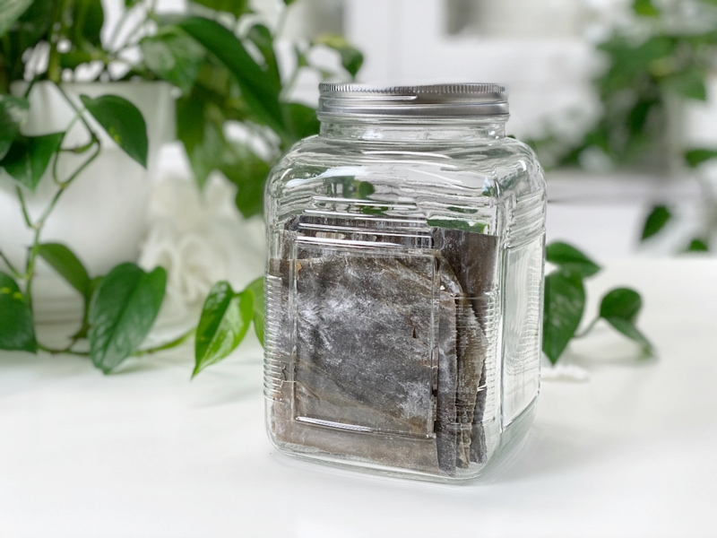

Why I Add Kombu Seaweed to Beans, Rice, Grains, and Soups
I learned the technique of using kombu seaweed years ago, and it has become a cornerstone of my cooking skills. Before I dive into this, I want to clarify (for those of you who squirm when the word “seaweed” comes up) that kombu seaweed doesn’t affect the taste of the foods you are cooking it in! With that out of the way, you might be more interested in hearing what I have to share today.

What Is Kombu Seaweed?
Kombu is an edible kelp that is found in sea forests, also known as kelp forests. These forests are very beneficial by providing an important ecosystem for the organisms that live between the seafloor and the surface of the ocean. It is typically dried and sold in sheets, though it can come in a powder. I get mine at our local grocery store in the health food department, but you can find it online as well. Make sure to buy organic.
Why Should I Use It?
It is high in vitamins A, C, E, B1, B2, B6, and B12. Seaweed also contains a substance (ergosterol) that converts to vitamin D in the body. In addition to essential nutrients, seaweeds provide us with carotene, chlorophyll, enzymes, and fiber. It is also rich in minerals, including potassium, calcium, and iodine. Kombu has higher iodine content than other seaweed, approximately 95 times that of nori and 4.4 times that of hijiki seaweed. (1)
What Does It Taste Like?
It has a very mild flavor and won’t affect the taste of the dish. Because it contains natural glutamic acid (the basis of MSG), it is a natural flavor enhancer. It adds umami to dishes, while also providing valuable minerals and nutrients to food it is cooked with. It has a saltiness that comes from a balanced, chelated combination of sodium, potassium, calcium, phosphorus, magnesium, iron, and a myriad of trace minerals found in the ocean. When you open a package you will notice what appears to be a white powder on the kombu–this is normal and doesn’t need to be washed off.
What Foods Do I Add It To?
To cook with it, add a 3-4″ strip to the cooking water of beans, rice, rolled oats, steel-cut oats, polenta, millet, quinoa, rice, homemade vegetable broths, and soup recipes. It’s an edible sea vegetable, so once the cooking process has completed, pull out the kombu, chop it into small pieces and place it back into the pot. You can also store it in the fridge and add it to the next pot of food you make.
Cautionary Words
If you suffer from thyroid problems or are on potassium medication or blood thinners, please take extra caution by consulting your doctor. This goes for any seaweed, actually. I am not a medical expert or nutritionist. I am only here to share what I have learned over the years and the ingredients that I use in my recipes.
© AmieSue.com